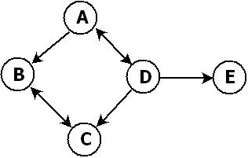

Example
The following diagram shows a graph with 5 vertices and 7 edges. The edges between A and D and B and C are pairs that make a bidirectional connection, represented here by a double-headed arrow. 